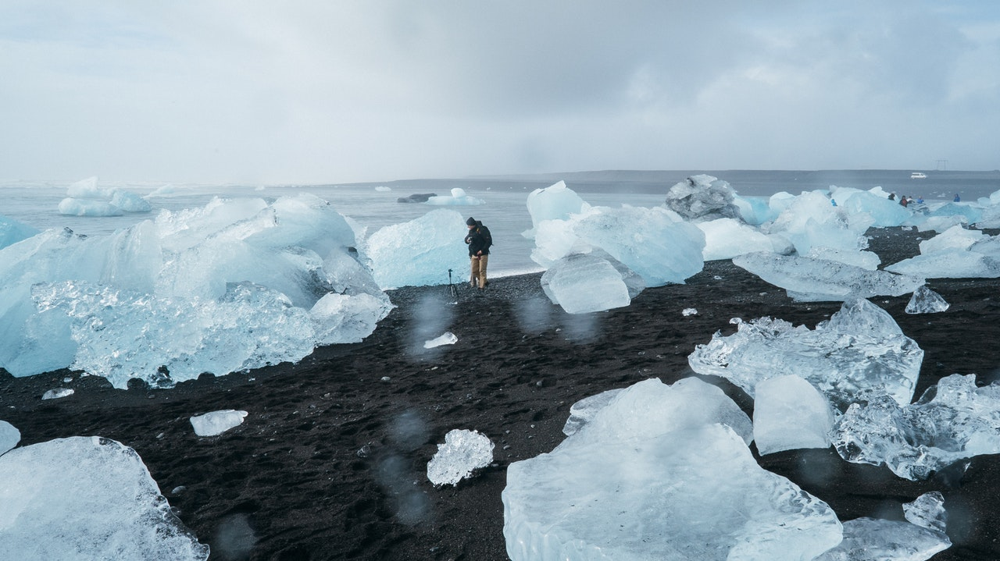
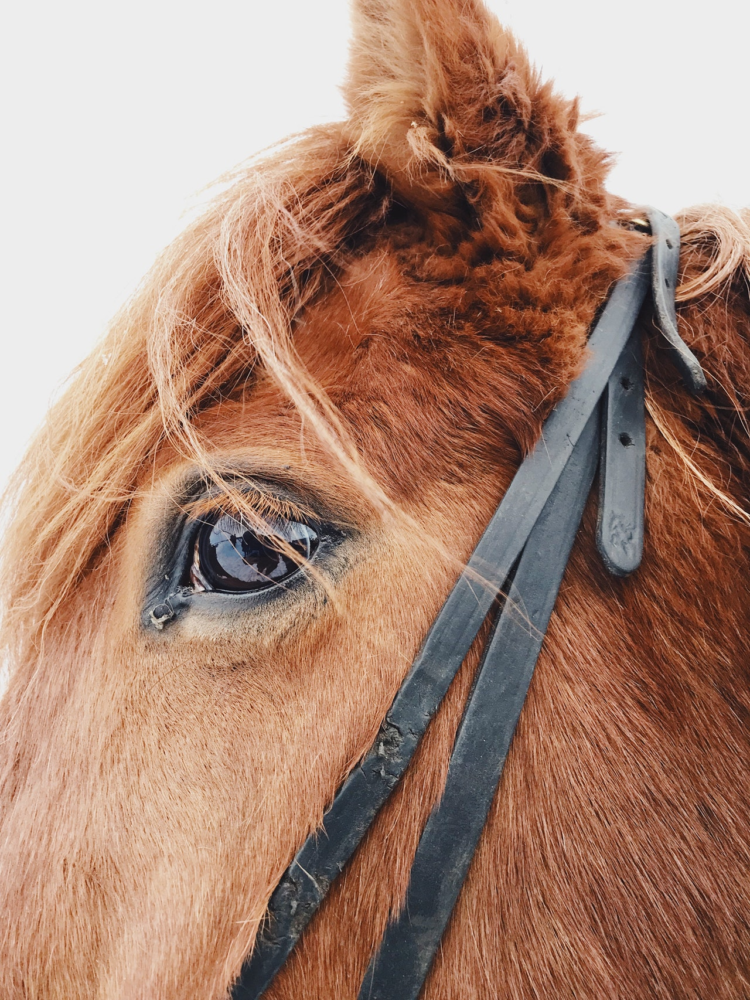

Nomadic future - stāsti, kas iedvesmo

Īslandē pavadījām nepilnas trīs dienas maijā un apskatījām valsts rietumus un nedaudz “pieskārāmies” dienvidiem. Jau sen bija vēlme apmeklēt šo valsti, bet baidījos no laikapstākļiem un dārdzības. Abas šīs bažas bija pamatotas. Vienīgais, kas bija lēts – aviobiļete, pārējās pozīcijas vai nu samērīgas, vai dārgas.
Šoreiz tāds standarta maršruts sanāca, bet iespējams, dažreiz arī tā vajag.. Auto īre – nolēmām, ka šis būs ērtākais un lētākais veids, lai pēc iespējas vairāk varētu apskatīt. Mēs izvēlējāmies greenmotion auto īri. Auto saņemšana greenmotion bija garšs process (vairāk kā stundu), bet tika ļoti smalki izstāstīti riski un no kā jāuzmanās.
Laikapstākļi Īslandē ir neprognozējami un “noķert” labu laiku, kā vīru aiz ūsām. Es nekad mūžā nebiju piedzīvojusi šādus apstākļus – vējšs tik spēcīgs, ka nevar paiet; lietus, kā balta siena; Tādēļ jauzmanās un nedrīkst atstāt auto durvis vaļā, jo vējš tās var izlauzt (redzējām šādas mašīnas ar izlauztām durvīm). Smilšu vētras, kas “noēd” automāšīnas krāsu, ja nokļūst šādā vētrā, tad uzmanīgi jāturpina braukt. Jāseko līdzi laikapstākļu prognozēm, jo tās mainās ļoti strauji un, var gadīties, diena, kad nav ieteicams pārvietoties ar auto: http://www.vedur.is/ Nonācām pie secinājuma, ka šī valsts ir īstā, lai izvēlētos ”off road” auto, jo paši ievadot galamērķi google.map nokļuvām uz nedaudz noblietēta vulkānu iežu ceļa (mūsu interpretācijā “zemes ceļa”). Kalna ceļi ir slēgti, tos atver tikai vasarā – jūlijā. Tā kā apzinājāmies, ka mūsu ceļojums būs īss un visu salu neiepazīsim, tad palikām uz galvenajiem ceļiem. Ja izvēlaties braukt pa 1. ceļu, tad zem pirmā līča ir tunelis, izbraucot no tā būs nepieciešams samaksāt 1000 kronas (apmēram 8.30Eur).
Šoreiz tāds standarta maršruts sanāca, bet iespējams, dažreiz arī tā vajag.. Auto īre – nolēmām, ka šis būs ērtākais un lētākais veids, lai pēc iespējas vairāk varētu apskatīt. Mēs izvēlējāmies greenmotion auto īri. Auto saņemšana greenmotion bija garšs process (vairāk kā stundu), bet tika ļoti smalki izstāstīti riski un no kā jāuzmanās.
Laikapstākļi Īslandē ir neprognozējami un “noķert” labu laiku, kā vīru aiz ūsām. Es nekad mūžā nebiju piedzīvojusi šādus apstākļus – vējšs tik spēcīgs, ka nevar paiet; lietus, kā balta siena; Tādēļ jauzmanās un nedrīkst atstāt auto durvis vaļā, jo vējš tās var izlauzt (redzējām šādas mašīnas ar izlauztām durvīm). Smilšu vētras, kas “noēd” automāšīnas krāsu, ja nokļūst šādā vētrā, tad uzmanīgi jāturpina braukt. Jāseko līdzi laikapstākļu prognozēm, jo tās mainās ļoti strauji un, var gadīties, diena, kad nav ieteicams pārvietoties ar auto: http://www.vedur.is/ Nonācām pie secinājuma, ka šī valsts ir īstā, lai izvēlētos ”off road” auto, jo paši ievadot galamērķi google.map nokļuvām uz nedaudz noblietēta vulkānu iežu ceļa (mūsu interpretācijā “zemes ceļa”). Kalna ceļi ir slēgti, tos atver tikai vasarā – jūlijā. Tā kā apzinājāmies, ka mūsu ceļojums būs īss un visu salu neiepazīsim, tad palikām uz galvenajiem ceļiem. Ja izvēlaties braukt pa 1. ceļu, tad zem pirmā līča ir tunelis, izbraucot no tā būs nepieciešams samaksāt 1000 kronas (apmēram 8.30Eur).